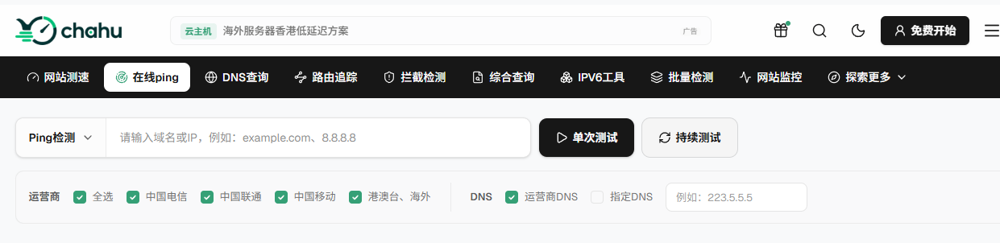
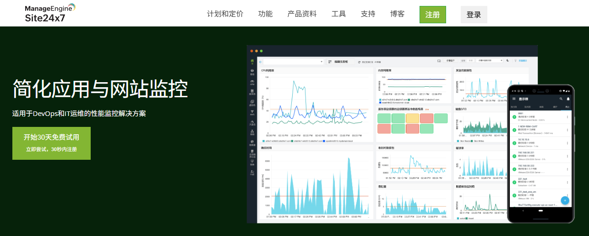

在自己电脑上 Ping 一个网站只有 20ms，并不代表其他地区的用户访问也是 20ms。这种情况在实际排查网站网络问题时很常见。上海电信测试一切正常，换到广州移动可能突然变成 80ms；国内节点延迟不高，新加坡、东京或美国节点却出现明显丢包。尤其是网站接入 CDN、服务器部署在海外，或者用户分布在多个地区时，只看本地一次 Ping，能得到的信息其实非常有限。
这也是在线 Ping 工具存在的意义。
相比电脑自带的 Ping 命令，在线 Ping 平台可以从不同城市、不同运营商甚至不同国家同时向目标域名或 IP 发起测试，把各地的响应时间、丢包、解析 IP 和线路差异集中展示出来。遇到网站访问慢、部分地区打不开、CDN 调度异常时，用起来会方便很多。
那么，在线 Ping 工具哪个好？
本文选了 6 款比较常用的网站 Ping 测速平台，包括 Chahu、ITDOG、17CE、Site24x7、KeyCDN Tools 和 Ping.pe。它们各自侧重点不同，有的更适合国内三网测试，有的更适合全球节点，还有的偏向服务器和路由故障排查。
一、选择在线Ping工具，主要看哪些功能？
Ping 本身并不复杂，但不同在线工具之间的差别并不只是“能不能 Ping”。真正拿来排查网站问题时，我通常更关注下面几个方面。
1. 测试节点是否足够丰富
如果一个工具只能从单个机房发起 Ping，那么它与自己电脑执行 Ping 的区别并不大。网站面向多个地区用户时，更应该观察不同网络位置的结果。比如国内业务至少要看看华东、华南、华北，以及电信、联通、移动之间有没有明显差异；做外贸、跨境电商或海外 SaaS，则还需要关注香港、新加坡、日本、美国和欧洲等主要用户区域。
同一个服务器，不同节点得到的结果可能完全不同。
例如：
测试节点 | Ping延迟 |
|---|---|
上海电信 | 18 ms |
北京联通 | 31 ms |
广州移动 | 67 ms |
香港 | 42 ms |
新加坡 | 78 ms |
如果只看一个“平均延迟”，广州移动明显偏高的问题很容易被掩盖掉。
2. 能不能区分不同运营商
对于国内网站，这一点尤其重要。中国电信、中国联通和中国移动之间存在不同的互联和路由情况。一条线路在电信网络里表现很好，并不意味着移动和联通也一样。
因此，做网站线路判断时，比“节点总数”更有价值的是能否把不同运营商的结果拆开来看。
3. 是否能看到延迟、丢包和波动
Ping 不应该只看最低值。
一个节点偶尔出现一次 15ms，并不能说明线路稳定。如果测试结果是：
最低：15ms
平均：48ms
最高：186ms
丢包率：8%
那么这条线路显然不能简单判断为“延迟只有 15ms”。
实际排查时，更应该同时观察平均响应时间、最高延迟、丢包、超时以及不同节点之间的波动。
4. 出现异常后能不能继续排查
Ping 更适合发现问题，却不一定能告诉你问题究竟发生在哪里。
如果发现某个地区延迟突然升高，接下来往往还需要继续检查：
TCPing → DNS → Traceroute/MTR → HTTP测速
因此，除了 Ping 之外还能提供 TCP、路由追踪、DNS 或 HTTP 检测的平台，在实际运维中会更加方便。
二、6款常用在线Ping工具快速对比
先用一张表把几款工具的定位区分开。
在线Ping工具 | 国内多运营商 | 全球节点 | 延迟/丢包 | 路由诊断 | 更适合 |
Chahu | 强 | 支持 | 支持 | 支持相关网络检测 | 网站、CDN、多地区综合测速 |
ITDOG | 强 | 支持 | 支持 | 强 | 国内服务器与线路排障 |
17CE | 强 | 支持 | 支持 | 强 | 国内多运营商网络检测 |
Site24x7 | 一般 | 强 | 支持 | 支持相关工具 | 全球网站与跨境业务 |
KeyCDN Tools | 一般 | 强 | 支持 | 支持 Traceroute 等 | 海外网站快速测试 |
Ping.pe | 较弱 | 强 | 支持 | 强 | VPS、国际线路与网络工程 |
选择在线 Ping 工具更适合按场景判断：测试国内网站和测试美国 VPS，本身就不是同一个需求。
三、6款常用在线Ping工具推荐
1. Chahu
如果主要目的是观察一个网站在国内不同地区、不同运营商以及海外节点之间的网络差异，Chahu 是比较容易上手的一款工具。它的 Ping 页面支持直接输入域名或 IP，可以选择单次测试或者持续测试，同时按照中国电信、中国联通、中国移动以及港澳台、海外节点进行筛选。
实际使用时，我比较看重它的一点，是结果没有只给一个简单的 Ping 数字。测试完成后，可以直接看到不同检测点的响应 IP、IP 所在位置和响应时间，还会按照区域统计最快、最慢和平均延迟。如果测试的是接入 CDN 的域名，还可以顺便观察不同地区最终解析到了哪些 IP。
这在判断 CDN 调度时很实用。
比如：
上海电信解析到节点 A；
北京联通解析到节点 B；
广州移动却被调度到距离明显更远的节点 C。
即使网站没有完全打不开，广州移动的 Ping 和后续 HTTP 响应也可能明显高于其他地区。
Chahu 当前还提供国内三大运营商以及海外探测节点，适合把国内线路和跨境访问放在同一套测试里观察。官网目前显示其网络检测体系覆盖多个国家和地区。
此外chahu还提供IPv6 在线 Ping，还包含 路由追踪、网站测速、DNS 查询、Traceroute/MTR，以及批量 Ping、批量 TCPing 和 HTTP(S) 测试等等，为站在检测网站提供了及其便利的条件。
比较适合：
网站站长、CDN 用户、跨境网站，以及需要快速判断不同地区和运营商网络质量的运维人员。如果只是想先回答“到底是所有地方都慢，还是某几个地区慢”，可以先从这类多节点 Ping 测试开始。

2. ITDOG
ITDOG 在国内服务器和网络线路排障场景里也比较常见。它不仅提供 IPv4、IPv6 在线 Ping，还包含 TCPing、网站测速、DNS 查询、Traceroute/MTR，以及批量 Ping、批量 TCPing 和 HTTP(S) 测试。
它比较适合这样一种情况：Ping 已经发现问题，但还需要继续确认问题发生在哪一层。例如某个服务器在线 Ping 一直显示超时，这时候不能立刻下结论说服务器挂了。
原因很简单：Ping 使用 ICMP 协议，有些服务器、防火墙或者安全策略会直接限制 ICMP 请求。ITDOG 官方的工具说明中也明确指出，禁 Ping 的目标无法通过 ICMP Ping 检测，但仍然可以使用 TCPing 对具体端口进行测试。
如果出现：
Ping：超时
TCP 443：正常
HTTPS：200 OK那就说明网站 HTTPS 服务可能完全正常，只是 ICMP 没有响应。如果 TCPing 也异常，还可以继续使用 MTR 或 Traceroute 查看数据包到底从哪一跳开始出现高延迟或丢包。ITDOG 的 MTR 页面会展示逐跳 IP、AS、丢包率以及最快、最慢和平均延迟等信息。
比较适合：
服务器运维、国内网络排障，以及需要从 Ping 继续深入到 TCP、HTTP 和路由层面的用户。
3. 17CE
17CE 也是老牌的国内多节点检测工具了。
除了基础的 Ping、MTR 和路由追踪，它还支持 DNS、CDN 以及 HTTP GET 测试。最好用的一点，就是可以按电信、联通、移动、教育网，甚至港澳台和海外直接过滤节点。它的核心价值依然在于横向对比不同地区和运营商的线路差异。
打个比方，如果你测出来某站点的平均延迟是：
电信：23 ms
联通：29 ms
移动：81 ms
海外：146 ms
这时候别光看“整体平均”，重点要看移动为什么比电信联通高出一大截。这背后可能是源站线路没优化好、跨网互联卡顿、BGP 路由跑偏，或者 CDN 调度出了毛病。到了这一步，继续一遍遍 Ping 意义不大，直接切到 MTR 或 TraceRoute 去查具体卡在哪个节点才管用。另外它还自带 CDN 专项检测，如果你的站点挂了 CDN，结合 Ping 和 DNS 联合排查会省事很多。
谁用比较合适？ 适合做国内 IDC 运维、CDN 排查，或者需要精细化对比三大网线路质量的朋友。
4. Site24x7 Ping Test
如果你的业务主打海外，那 Site24x7 的 Ping 工具会顺手得多。
它支持全球 130 多个节点，能一次性跑完响应时间、丢包率和 RTT，覆盖北美、欧洲、亚太和澳洲等主要区域，非常适合跨境业务。
举个很现实的例子：服务器挂在美国西海岸，但用户遍布洛杉矶、纽约、伦敦、法兰克福、新加坡、东京和悉尼。你直接从国内本地电脑 Ping 一下，根本反映不出海外用户的真实体验。用它跑一遍全球节点，地区间的延迟梯度就一目了然了——如果美西只有 15ms，而新加坡要 170ms 左右，这大概率不是机器出了故障，而是跨洋物理距离和国际路由带来的正常开销。
除了 Ping，它还整合了网站可用性和 DNS 诊断，更适合作为海外站点的长期监控方案。不过说实话，如果你主要是想分析中国大陆三大运营商之间的细微差异，选查网、ITDOG 或者 17CE 会直观得多。
谁用比较合适？ 外贸站、跨境电商、海外 SaaS 以及需要保障全球访问质量的团队。

5. KeyCDN Tools
KeyCDN 的特点就是干净利落，不搞花里胡哨的。
打开 Ping 测试页面，填上 IP 或域名，直接从全球多个节点并发测试。走的是标准 ICMP，拿来快速测目标机稳不稳定、往返延迟高不高非常方便。
平时遇到临时需求，比如突然想看一眼“这台 VPS 从欧洲和亚洲连过来到底多少延迟”，用它最省心。除了普通的 Ping，它还顺手把 IPv6 Ping、Traceroute、DNS 查验、HTTP Header 查看和 BGP Looking Glass 都整合在一块儿了。排查出延时异常后，不需要切到别的平台，直接在原地就能做二段诊断。
当然，它的侧重点完全在国际网络，国内三大网的优化检测并不是它的强项。
谁用比较合适？ 经常折腾海外 VPS、国际服务器，或者需要临时跑一下全球延迟排查的朋友。
6. Ping.pe
Ping.pe 和前面几款工具的思路稍微有些不同。
它更偏向网络工程和国际线路诊断，而不是普通站长使用的“网站速度评分工具”。
平台可以用于 Ping、MTR、Dig、TCP 端口检查以及 BGP Looking Glass 等网络诊断。更有意思的是，Ping.pe 并不单纯追求测试节点数量。
其官方说明提到，平台更关注不同 Tier 1、Tier 2 IP Transit 网络的诊断价值，因为在分析路由传播和数据包丢失时，节点并不是越多越好，节点所连接的网络类型同样重要。
这一点对于普通网站测速可能没有太大感觉，但如果你正在测试海外 VPS、国际线路或者某个 AS 之间的路由问题，就会比较有用。
例如出现：
亚洲部分线路正常，美国某些网络却持续丢包。
这时候单看平均 Ping 已经不够，需要进一步观察具体 Transit 和路由路径。
比较适合：
海外 VPS、服务器线路测试、国际路由故障以及有一定网络基础的技术人员。如果只是普通站长想看看网站打开是否正常，它的使用门槛会比 Chahu 或 Site24x7 稍高。
四、不同场景应该选择哪个在线Ping工具？
看完六款平台，其实没有必要纠结“到底谁绝对最好”。更实际的选择方式，是先明确你要解决什么问题。
国内网站、CDN和多运营商测试
可以优先考虑：
Chahu、ITDOG、17CE
如果主要想快速看：
哪个地区慢；
电信、联通、移动差异大不大；
不同地区解析到了哪个 IP；
CDN 节点调度有没有明显异常；
Chahu 的结果展示比较直观。
如果发现问题以后还需要继续做 TCPing、MTR 或更深入的线路分析，可以再结合 ITDOG、17CE。
服务器网络故障排查
可以优先考虑：
ITDOG或chahu
先 Ping 判断基础网络，再使用 TCPing 检测具体端口，最后根据情况继续跑 MTR 或 Traceroute。
这种排查方式比反复 Ping 同一个 IP 有效得多。
外贸网站和全球用户
可以考虑：
Site24x7、KeyCDN Tools
关键不是把全世界所有城市都测一遍，而是选择真实业务用户集中的地区。
例如一个主要做美国、日本和新加坡市场的跨境网站，就应该重点观察这几个区域，而不是只盯国内节点。
VPS和国际网络线路
可以考虑：
Ping.pe
尤其是在需要分析国际路由、IP Transit、丢包和 BGP 情况时，它会比普通网站 Ping 工具更有针对性。
五、在线Ping结果怎么看？
选好工具之后，另一个常见问题就是：Ping 到底多少才算正常？网上经常能看到“50ms 以下优秀、100ms 以上很差”这类标准，但实际使用时不能机械套用。可以先把下面的数据作为一个比较粗略的参考：
Ping延迟 | 一般情况 |
≤20 ms | 延迟很低，通常是距离较近或线路较好 |
20–50 ms | 大多数网站访问体验很好 |
50–100 ms | 通常仍属于可接受范围 |
100–200 ms | 已经能够看到物理距离或跨境线路影响 |
>200 ms | 延迟偏高，建议结合路由进一步分析 |
关键在于测试双方在哪里。上海用户访问上海服务器，如果长期 150ms，显然不正常。但中国用户访问美国东海岸服务器出现 180ms 左右的 RTT，就不能直接判断服务器质量很差。物理距离、海底光缆和国际路由本身已经决定了延迟下限。
除了平均延迟，还要特别注意两件事。
丢包
例如：
平均延迟：38ms
丢包率：0%和：
平均延迟：35ms
丢包率：12%虽然第二组 Ping 数字看起来更低，但真实网络体验很可能反而更差。
延迟波动
如果 Ping 一会儿 20ms，一会儿突然跳到 150ms、300ms，即使没有完全丢包，也说明线路存在明显抖动。
对游戏、语音、视频会议、WebSocket 和实时 API 来说，这种不稳定往往比单纯多几十毫秒更加影响体验。
六、为什么Ping很低，网站打开还是很慢？
这是使用在线 Ping 工具时特别容易产生的误判。Ping 快，不等于网页一定打开得快。Ping 主要测试的是 ICMP 数据包从测试节点到目标主机再返回的往返时间，也就是 RTT。而浏览器真正打开一个 HTTPS 网站，还要经历一整套过程：
DNS解析
↓
TCP连接
↓
TLS握手
↓
HTTP请求
↓
等待服务器返回首字节（TTFB）
↓
下载HTML
↓
加载CSS、JavaScript、图片
↓
浏览器执行与页面渲染假设网站 Ping 只有 20ms，但服务器处理一个动态请求需要 800ms，那么用户打开页面依然会觉得很慢。
又或者 Ping 很低，但页面加载了大量未经压缩的图片、第三方 JavaScript 和广告脚本，同样会拖慢实际加载时间。
所以 Ping 最适合回答的问题是：
网络往返延迟和基本连通性有没有异常？
而不是：
整个网页到底几秒打开？
如果 Ping 一切正常，但用户仍然反馈网站慢，下一步应该继续测试 HTTP 响应时间、TTFB、DNS、TCP/TLS 连接时间以及页面资源加载情况，而不是一直重新 Ping。
在线 Ping 本身是一个很基础的网络测试方法，但把它放到多个地区和多个运营商中同时执行，能发现很多本地 Ping 看不到的问题。如果主要测试国内网站、CDN 和不同运营商的网络质量，可以优先使用 Chahu、ITDOG 和 17CE。其中 Chahu 比较适合快速观察不同地区、运营商和解析 IP 之间的差异；需要继续进行 TCPing、MTR 和路由诊断时，可以结合 ITDOG 或 17CE。
如果主要面向海外网站和全球用户，Site24x7 和 KeyCDN Tools 的全球节点更方便；对于海外 VPS、国际 Transit 和复杂路由故障，Ping.pe 则更加偏向专业网络诊断。
不过无论使用哪一个在线 Ping 工具，都不要把一个“XX ms”当成网站速度的最终结论。Ping 更适合发现网络延迟、区域差异和丢包问题。真正判断一个网站快不快，还应该把 DNS、TCP/TLS、TTFB、HTTP加载和页面渲染放在一起分析。先用 Ping 找到“哪里不正常”，再用其他工具继续确定“为什么不正常”，这才是在线 Ping 在网站测速和网络排障中真正有价值的用法。
常见问题
1. 在线Ping工具测出来的延迟，和我自己电脑上Ping的结果为什么不一样？
因为你自己电脑Ping的是“从你家到服务器”的单一路径延迟，而在线Ping工具是从全球或全国多个节点同时发起测试。比如你在上海Ping一个网站只有20ms，但广州移动的用户可能Ping出80ms，新加坡节点甚至可能超过150ms。在线工具的价值就在于帮你发现这些“本地测不出来”的区域差异。
2. ITDOG最近老是Ping不通，有没有替代工具推荐？
ITDOG确实偶尔会遇到节点Ping不通或需要输验证码的情况，有用户反映是节点IP被攻击导致ICMP丢包。如果遇到这种情况，可以换Chahu或17CE做国内多节点测试，排查国际线路可以用Ping.pe。另外SpeedCE也是国内多节点测试的免费选择。
3. Ping延迟多少算正常？有没有一个统一标准？
没有统一标准，关键看测试双方在哪里。同城节点5-20ms属于很好；同省或邻近省份10-30ms算正常；国内跨地区一般不超过100ms；中国访问美国东海岸服务器出现180ms左右属于物理距离决定的正常范围。别拿本地Ping的标准去要求跨境线路。
4. 丢包率多少算有问题？
理想情况丢包率应该是0%。0.1%-1%属于优秀，绝大多数场景下用户无感知；1%-3%算良好，普通网页浏览没问题，但对延迟敏感的应用偶尔会卡；超过5%就会严重影响连接稳定性；丢包率超过10%就属于异常。
5. 为什么在线Ping显示延迟很低，但网站打开还是很慢？
Ping测的是ICMP数据包往返时间，而网页加载还要经历DNS解析、TCP连接、TLS握手、服务器处理（TTFB）、下载资源等环节。如果服务器处理一个请求就要800ms，就算Ping只有20ms，用户照样觉得慢。Ping只能回答“网络通不通、延迟高不高”，回答不了“网页几秒打开”这个问题。
6. 测试国内网站，应该选哪个在线Ping工具？
优先选国内节点覆盖全、能区分运营商的工具。Chahu、ITDOG和17CE都支持电信、联通、移动三网分别测试。chahu是“国内网站测速天花板”，节点最全，适合快速看不同地区的解析IP和CDN调度差异；17CE拥有全球近100个检测节点，还支持批量检测30个目标，也是不错的选择。